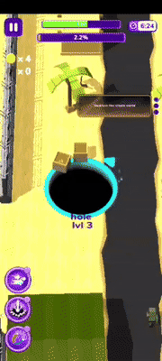
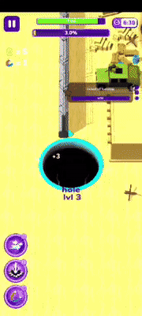
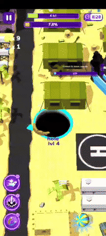
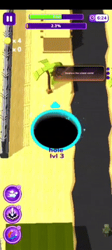

尝试用 Jev 游玩手机上的黑洞大作战 (HOLEIN) 游戏
我想验证一个很具体的问题：Jev 这种自称是为程序准备的 System One 模型，能不能真的开始玩手机游戏？
我选了 Android 上的 HOLEIN （黑洞大作战）。目标很朴素：黑洞移动、吞小物体、逐渐长大，直到能吞掉整张地图。它也恰好适合把一条 AI 控制链拆开看。
概述
如何让代码持续看手机画面、把有限而真实的游戏状态交给 Jev 做方向选择，再由代码执行动作并验证结果？
这里的主语不是“一个会自己玩游戏的 Agent”。Jev 不看图片（所以对游戏环境的建模需要你自己来做！）、不操作手机，也不拥有循环。它是模型，而不是Agent Loop本身。它负责在代码给出的有限选项中，返回带概率和置信度的结构化判断。
Android 屏幕
│ ADB 截图（只留在本机）
▼
本地感知：洞口、候选物、尺寸、方位、近期变化
│ 精简 JSON（不上传截图）
▼
Jev Choice：下一步方向
│ typed answer + probabilities + confidence
▼
代码执行 ADB swipe
│
└──────── 回到下一帧 ────────┘
初版验证用 Playground 做了一次最小试验：我把“洞在中央、左上有小木箱、右侧是大建筑”写成状态，给出八个方向和 hold。Jev 返回 up_left，概率和置信度都很高。接着用 ADB 执行移动，并回读屏幕。
正式闭环：代码掌控，Jev 只给判断
根据 TypeSafe 的构建指南，控制流、确定性规则和副作用应该留在代码里。于是后续改成直接调用 API：
response = client.system_one(
state=compact_game_state,
questions={"next_move": Choice(...)},
)
direction = response.choices["next_move"].choice
adb_swipe(direction)
第一次五步直连已经出现了真实进展：HOLEIN 从 1 级升到 2 级，世界进度达到 0.2%。这不是 benchmark，也不是离线回放；它是手机上的游戏状态变化。
在这台机器和这条网络上，Jev 的单次 API 延迟大约在 0.27–0.95 秒之间。最慢的部分反而不是模型，而是高分辨率手机截图的 PNG 压缩：1220×2712 一帧约 2.19 秒。把 Android 的逻辑分辨率临时降到 305×678 后，截图约 455 ms，本地像素处理约 26 ms，游戏才开始有接近连续控制的感觉。
下面是本次录屏的开头。录屏开始时，闭环已经把洞推进到 Level 3、约 2.2% 进度；这段画面用来证明“截图 → 状态 → Jev → ADB swipe”确实在真实游戏中持续运行，并不把它冒充成从 1 级开始的画面。

录屏约 14–27 秒处出现了从 Level 3 到 Level 4 的升级。这个 GIF 与上面的“系统确实产生进展”相对应：不是一次静态截图，而是洞口变大后继续在同一张地图里移动。

数据格式参考
Jev 当前不接收图像，所以屏幕截图没有离开电脑。上传的是像下面这样的状态：
{
"player": {
"hole_radius_px": 60,
"hole_diameter_px": 120,
"level_estimate": 3
},
"candidates": [
{
"direction": "up_right",
"distance_px": 92,
"width_px": 37,
"height_px": 18,
"span_to_hole_diameter": 0.31,
"area_to_hole_opening": 0.09,
"aspect_ratio": 2.06,
"visual_shape": "compact object"
}
],
"recent_actions": ["left", "up_left", "right"],
"stagnant_steps_without_detected_growth": 6
}
控制器会记录每次请求的语义 payload 字节数、token 用量、延迟、置信度和实际执行方向，并在请求过大时停止。早期状态每次大约 1.3 KiB；加入物体相对尺寸、最近动作和停滞信息后约为 3–4 KiB。这个变化很有意思：更好的判断不是靠把截图扔给模型（也并不能这么做），而是靠把真正影响动作的关系说清楚。
Jev在状态给得不那么明确的前提下，仍然有可能游玩死循环
最初的本地感知只会找深色、紧凑的连通区域。它能找出一些小物体，却不理解“这是一栋房子”“它比洞大”“这几步只是围着同一块结构打转”。结果很自然：模型有时会在两个相近方向间往返，或者把建筑碎片当成候选目标。
录屏后段能看到这个问题的真实场景：洞已到 Level 4，地图上出现大型建筑、停机坪与成片结构。画面不是模型的输入；本地感知只能把它们压缩为几何描述，因此“建筑”在状态里如果只剩一块深色连通域，就会丢失最关键的可吞性关系。

这里最重要的一次修正并不是再写一个更聪明的本地贪心策略。那样只是用规则把 Jev 架空。
更合理的修正是补齐状态：
- 物体相对洞口的跨度、面积和宽高比；
- 组件的紧凑度、颜色与“像独立物体还是长条/大型结构”的视觉描述；
- 洞口尺寸最近是否真的增长；
- 最近动作序列和各方向的重复次数；
- 卡住时的随机探索建议。
随机性也不应成为另一个暗藏的本地策略。它只是状态中的一个可选信号：当最近动作已经形成循环、洞口却没有增长时，Jev 可以把它作为打破平局的方向；是否执行仍由返回的 Choice 决定。
这个模型确实能玩一些游戏，但前提是状态已经把它需要判断的关系表达出来。
现在仍然没有解决的事
这还不是一个可靠的自动通关器。
本地像素处理只能描述几何关系，不能真正识别 HOLEIN 里的每种建筑、道具或敌人。洞口半径也可能被特效、遮挡和 UI 文字影响。模型的概率和置信度能告诉我们它在给定状态下是否犹豫，却不能弥补缺失的视觉证据。
如果要把这个实验继续做成稳定系统，可以在更可靠的本地感知层着手：能分割物体、追踪同一目标、确认“吞掉了什么”，再把这些事实交给 Jev。不要把提示词搞得太长，也不要把策略喂给它。
下面这段 GIF 覆盖一段 175 秒录屏，并以 5×速度播放（只降采样取了部分帧，所以看起来没有特别流畅），供参考。

“让 AI 玩游戏”并不是一个已经解决的问题。我们只是做了一次有用的拆解：控制系统能跑、模型能决策、手机真的会动；但视觉状态太粗糙时，循环同样会真实地卡住。
评论